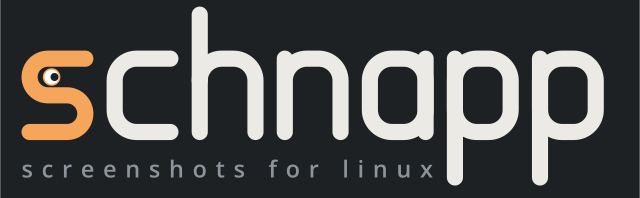
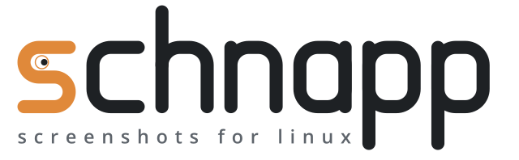
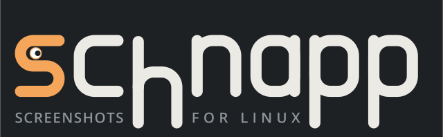
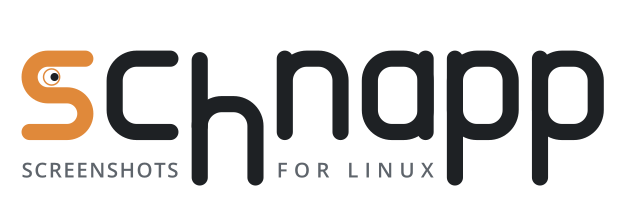
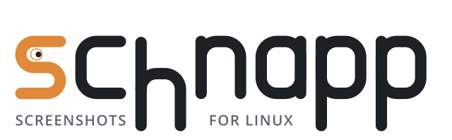
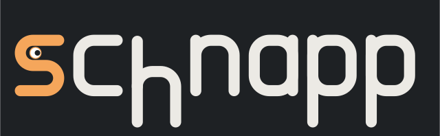
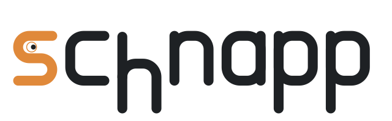
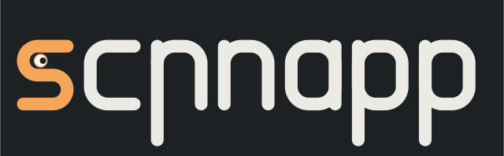
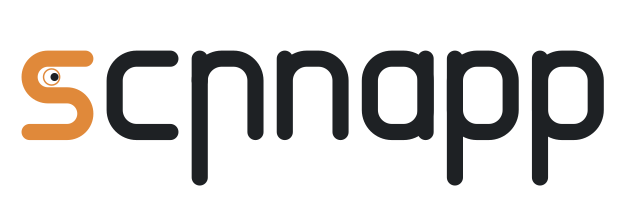

Grundlage Runde 5 b (oranges s, Blick nach rechts). Neu: Unterzeile unter „schna“ oder ein hängendes „h“. Farben wie Runde 3, aufeinander abgestimmt und in der Oberfläche nutzbar
(marke/farben.md). Schriftzug wie Runde 1. Quelle: marke/werkzeug/runde6.py.
„LINUX SCREENSHOTS“, Open Sans als Pfade, füllt genau die Breite unter „schna“. Empfehlung.
„linux screenshots“ in Kleinbuchstaben, gesperrt.
Längere Fassung, enger gesperrt. Von Andi gewählt (19.11.2026).


„SCREENSHOTS“ unter „sc“, „FOR LINUX“ unter „na“, beide auf der Fußlinie von h und pp. Das h steht wie ein Schlussstein dazwischen. Oben: beide Wörter auf volle Breite gesperrt (Empfehlung); unten: gleiche Sperrung, „FOR LINUX“ mittig.



Das h sitzt komplett um die Unterlänge tiefer, sein Fuß auf Höhe der pp. Lesbar, verspielt („hüpft“); verträgt sich nicht mit einer Unterzeile, weil es in deren Zeile ragt.


Der Stamm des h hängt wie die pp. Liest sich wie „scɲapp“ — nicht empfohlen.

